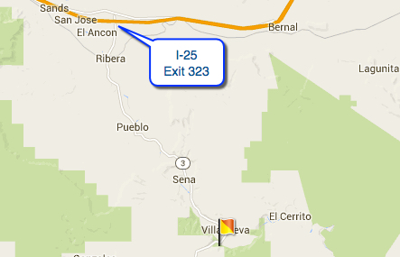

Hike New Mexico
w/ Tom & Ken
Villanueva View Point Loop Hike
| Difficulty | Round-trip | Type | Elev. Chg. | Exposure | Wow Factor | Facilities | Seasons | Photos | By Car |
|---|---|---|---|---|---|---|---|---|---|
| Medium | 2 miles | Loop | 200 ft | Sun, some shade | Water & views | Parking Area | All |
 |
 |



- Aug 9, 2014: Traveling towards Villanueva
- Aug 9, 2014: Muddy Pecos during monsoon season
- Aug 9, 2014: The footbridge provides access to the trail
- Aug 9, 2014: People enjoying the State Park
- Aug 9, 2014: Viewpoint loop trail affords pleasant vista
- https://www.flickr.com/photos/139088815@N08/26752984464/in/album-72157668297226520
- https://www.flickr.com/photos/139088815@N08/27084959420/in/album-72157668297226520
- https://www.flickr.com/photos/139088815@N08/26753007094/in/album-72157668297226520
- https://www.flickr.com/photos/139088815@N08/27327009846/in/album-72157668297226520
- https://www.flickr.com/photos/139088815@N08/26753854593/in/album-72157668297226520
Villanueva State Park is a small but attractive park along the Pecos River, east of Santa Fe. There are actually two hikes available, but the author got rained out after the first. During the monsoon season, it can rain virtually every day for weeks, hence the muddy look to the river in the above photos. As rain storms can come quickly, it is advised to have shelter within reach - and cars can get surrounded by flash floods on the highway, as experienced by the author. The Viewpoint Loop is a very nice easy/moderate hike that goes up a few hundred feet and provides great vistas of the surrounding area. Access to this hike is across the footbridge over the Pecos.